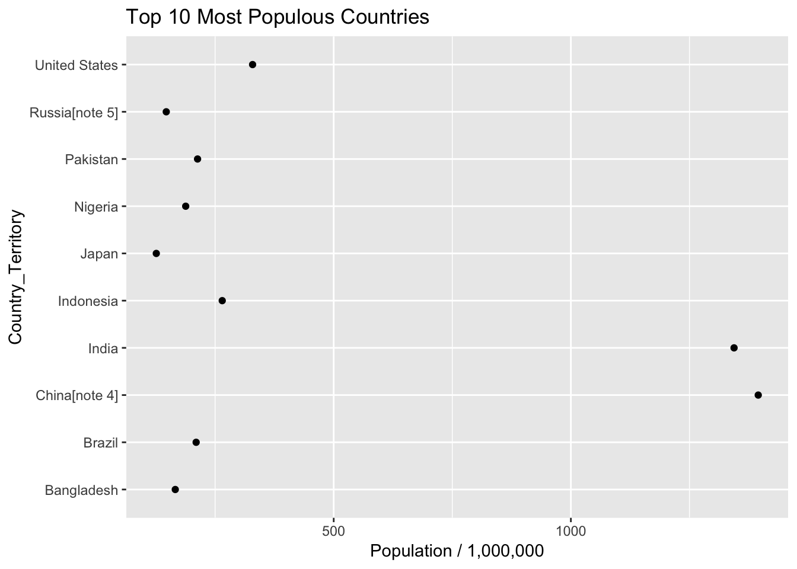

Web Scraping with R
Steve Pittard
2018-11-10
Chapter 1 Motivations
1.1 Lots of Data For The Taking ?
The web hosts lots of interesting data that you can ”scrape”. Some of it is stashed in data bases, behind APIs, or in free form text. Lots of people want to grab information of of Twitter or from user forums to see what people are thinking. There is a lot of valuable information out there for the taking although some web sites have “caught on” and either block programmatic access or they setup “pay walls” that require you to subscribe to an API for access. The New York Times does this. But there are lots of opportunities to get data.
| tables | Fetch tables like from Wikipedia |
| forms | You can submit forms and fetch the results |
| css | You can access parts of a web site using style or css selectors |
| Tweets | Process tweets including emojis |
| Web Sites | User forums have lots of content |
| Yes you can “scrape” photos also |
1.2 Web Scraping Can Be Ugly
Depending on what web sites you want to scrape the process can be involved and quite tedious. Many websites are very much aware that people are scraping so they offer Application Programming Interfaces (APIs) to make requests for information easier for the user and easier for the server administrators to control access. Most times the user must apply for a “key” to gain access. For premium sites, the key costs money. Some sites like Google and Wunderground (a popular weather site) allow some number of free accesses before they start charging you. Even so the results are typically returned in XML or JSON which then requires you to parse the result to get the information you want. In the best situation there is an R package that will wrap in the parsing and will return lists or data frames.
Here is a summary:
First. Always try to find an R package that will access a site (e.g. New York Times, Wunderground, PubMed). These packages (e.g. omdbapi, easyPubMed, RBitCoin, rtimes) provide a programmatic search interface and return data frames with little to no effort on your part.
If no package exists then hopefully there is an API that allows you to query the website and get results back in JSON or XML. I prefer JSON because it’s “easier” and the packages for parsing JSON return lists which are native data structures to R. So you can easily turn results into data frames. You will ususally use the rvest package in conjunction with XML, and the RSJONIO packages.
If the Web site doesn’t have an API then you will need to scrape text. This isn’t hard but it is tedious. You will need to use rvest to parse HMTL elements. If you want to parse mutliple pages then you will need to use rvest to move to the other pages and possibly fill out forms. If there is a lot of Javascript then you might need to use RSelenium to programmatically manage the web page.
1.3 Understanding the language of the Web
The Web has its own languages: HTML, CSS, Javascript
<h1>, <h2>, ..., <h6> Heading 1 and so on
<p> Paragraph elements
<ul> Unordered List
<ol> Ordered List
<li> List Element
<div> Division / Section
<table> Tables
<form> Web formsSo to be productive at scraping requires you to have some familiairty with HMTL XML, and CSS. Here we look at a very basic HTML file
<!DOCTYPE html>
<html>
<body>
<h1>My First Heading</h1>
<p>My first paragraph.</p>
</body>
</html>
And you could apply some styling to this courtest of the CSS language which allows you to inject styles into plain HTML:


There are a number of tools that allow us to inspect web pages and see “what is under the hood”. Warning - I just discovered that one of my favorite browser plugins to find the xpaths and/or css paths of page elements is no longer supported under Firefox or Chrome. I’ve found a couple of replacements but they don’t work as well. I’ll research it more.
| Selector Gadget | http://selectorgadget.com/ |
| Firebug | https://getfirebug.com/ (now integrated into a version of Firefox) |
| Google Chrome | Right click to inspect a page element |
| Google Chrome | View Developer - Developer Tools |
| Oxygen Editor | Can obtain via the Emory Software Express Site |
1.4 Useful Packages
You will use the following three primary packages to help you get data from various web pages: rvest, XML, and RJSONIO. Note that you won’t always use them simultaneously but you might use them in pairs or individually depending on the task at hand.
1.5 Quick rvest tutorial
Now let’s do a quick rvest tutorial:
url <- "https://en.wikipedia.org/wiki/World_population"
(paragraphs <- read_html(url) %>% html_nodes("p"))## {xml_nodeset (61)}
## [1] <p class="mw-empty-elt"> \n</p>
## [2] <p class="mw-empty-elt">\n</p>
## [3] <p>In <a href="/wiki/Demographics" class="mw-redirect" title="Demog ...
## [4] <p>World population has experienced <a href="/wiki/Population_growt ...
## [5] <p>Total annual births were highest in the late 1980s at about 139 ...
## [6] <p>Six of the <a href="/wiki/Earth" title="Earth">Earth</a>'s seven ...
## [7] <p>Estimates of world population by their nature are an aspect of < ...
## [8] <p>It is difficult for estimates to be better than rough approximat ...
## [9] <p>Estimates of the population of the world at the time agriculture ...
## [10] <p>The <a href="/wiki/Plague_of_Justinian" title="Plague of Justini ...
## [11] <p>Starting in AD 2, the <a href="/wiki/Han_Dynasty" class="mw-redi ...
## [12] <p>The <a href="/wiki/Pre-Columbian_era" title="Pre-Columbian era"> ...
## [13] <p>During the European <a href="/wiki/British_Agricultural_Revoluti ...
## [14] <p>Population growth in the West became more rapid after the introd ...
## [15] <p>The first half of the 20th century in <a href="/wiki/Russian_Emp ...
## [16] <p>Many countries in the <a href="/wiki/Developing_world" class="mw ...
## [17] <p>It is estimated that the world population reached one billion fo ...
## [18] <p>According to current projections, the global population will rea ...
## [19] <p>There is no estimation for the exact day or month the world's po ...
## [20] <p>As of 2012, the global <a href="/wiki/Human_sex_ratio" title="Hu ...
## ...Then we might want to actually parse out those paragraphs into text:
paragraphs <- read_html(url) %>% html_nodes("p") %>% html_text()
paragraphs[1:10]## [1] " \n"
## [2] "\n"
## [3] "In demographics, the world population is the total number of humans currently living, and was estimated to have reached 7.6 billion people as of May 2018.[1] It took over 200,000 years of human history for the world's population to reach 1 billion;[2] and only 200 years more to reach 7 billion.[3]"
## [4] "World population has experienced continuous growth since the end of the Great Famine of 1315–17 and the Black Death in 1350, when it was near 370 million.[4] \nThe highest population growth rates – global population increases above 1.8% per year – occurred between 1955 and 1975, peaking to 2.06% between 1965 and 1970.[5] The growth rate has declined to 1.18% between 2010 and 2015 and is projected to decline further in the course of the 21st century.[5]"
## [5] "Total annual births were highest in the late 1980s at about 139 million,[6] and as of 2011 were expected to remain essentially constant at a level of 135 million,[7] while deaths numbered 56 million per year and were expected to increase to 80 million per year by 2040.[8] \nThe median age of the world's population was estimated to be 30.4 years in 2018.[9]"
## [6] "Six of the Earth's seven continents are permanently inhabited on a large scale. Asia is the most populous continent, with its 4.54 billion inhabitants accounting for 60% of the world population. The world's two most populated countries, China and India, together constitute about 36% of the world's population. Africa is the second most populated continent, with around 1.28 billion people, or 16% of the world's population. Europe's 742 million people make up 10% of the world's population as of 2018, while the Latin American and Caribbean regions are home to around 651 million (9%). Northern America, primarily consisting of the United States and Canada, has a population of around 363 million (5%), and Oceania, the least populated region, has about 41 million inhabitants (0.5%).[11] Though it is not permanently inhabited by any fixed population, Antarctica has a small, fluctuating international population based mainly in polar science stations. This population tends to rise in the summer months and decrease significantly in winter, as visiting researchers return to their home countries.[12]"
## [7] "Estimates of world population by their nature are an aspect of modernity, possible only since the Age of Discovery. Early estimates for the population of the world[14] date to the 17th century: William Petty in 1682 estimated world population at 320 million (modern estimates ranging close to twice this number); by the late 18th century, estimates ranged close to one billion (consistent with modern estimates).[15] More refined estimates, broken down by continents, were published in the first half of the 19th century, at 600 to 1000 million in the early 1800s and at 800 to 1000 million in the 1840s.[16]"
## [8] "It is difficult for estimates to be better than rough approximations, as even modern population estimates are fraught with uncertainties on the order of 3% to 5%.[17]"
## [9] "Estimates of the population of the world at the time agriculture emerged in around 10,000 BC have ranged between 1 million and 15 million.[18][19] Even earlier, genetic evidence suggests humans may have gone through a population bottleneck of between 1,000 and 10,000 people about 70,000 BC, according to the Toba catastrophe theory. By contrast, it is estimated that around 50–60 million people lived in the combined eastern and western Roman Empire in the 4th century AD.[20]"
## [10] "The Plague of Justinian, which first emerged during the reign of the Roman emperor Justinian, caused Europe's population to drop by around 50% between the 6th and 8th centuries AD.[21] The population of Europe was more than 70 million in 1340.[22] The Black Death pandemic of the 14th century may have reduced the world's population from an estimated 450 million in 1340 to between 350 and 375 million in 1400;[23] it took 200 years for population figures to recover.[24] The population of China decreased from 123 million in 1200 to 65 million in 1393,[25] presumably due to a combination of Mongol invasions, famine, and plague.[26]"Get some other types of HTML obejects. Let’s get all the “h2” HTML elements:
read_html(url) %>% html_nodes("h2") %>% html_text()## [1] "Contents" "Population by region"
## [3] "History" "Global demographics"
## [5] "Largest populations by country" "Fluctuation"
## [7] "Mathematical approximations" "Overpopulation"
## [9] "See also" "Notes"
## [11] "References" "External links"
## [13] "Navigation menu"1.6 Example: Parsing A Table From Wikipedia
Look at the Wikipedia Page for world population:
https://en.wikipedia.org/wiki/World_population
- We can get any table we want using rvest
- We might have to experiment to figure out which one
- Get the one that lists the ten most populous countries
- I think this might be the 4th or 5th table on the page
- How do we get this ?

First we will load packages that will help us throughout this session.
In this case we’ll need to figure out what number table it is we want. We could fetch all the tables and then experiment to find the precise one.
library(rvest)
# Use read_html to fetch the webpage
url <- "https://en.wikipedia.org/wiki/World_population"
ten_most_df <- read_html(url)
ten_most_populous <- ten_most_df %>%
html_nodes("table") %>% `[[`(6) %>% html_table()
# Let's get just the first three columns
ten_most_populous <- ten_most_populous[,2:4]
# Get some content - Change the column names
names(ten_most_populous) <- c("Country_Territory","Population","Date")
# Do reformatting on the columns to be actual numerics where appropriate
ten_most_populous %>%
mutate(Population=gsub(",","",Population)) %>%
mutate(Population=round(as.numeric(Population)/1e+06)) %>%
ggplot(aes(x=Country_Territory,y=Population)) + geom_point() +
labs(y = "Population / 1,000,000") + coord_flip() +
ggtitle("Top 10 Most Populous Countries")
In the above example we leveraged the fact that we were looking specifically for a table element and it became a project to locate the correct table number. This isn’t always the case with more complicated websites in that the element we are trying to grab or scrape is contained within a nested structure that doesn’t correspond neatly to a paragraph, link, heading, or table. This can be the case if the page is heavily styled with CSS or Javascript. We might have to work harder. But it’s okay to try to use simple elements and then try to refine the search some more.
1.7 Summary
- Need some basic HTML and CSS knowledge to find correct elements
- How to extract text from common elements
- How to extract text from specific elements
- Always have to do some text cleanup of data
- It usually takes multiple times to get it right
See http://bradleyboehmke.github.io/2015/12/scraping-html-text.html